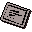

Barcrawl card

| Config name | barcrawl_card |
| Item id | 455 |
| Value | 10 gp |
| Weight | 150g |
| Members | Yes |
| Tradeable | No |
| Stackable | No |
| Options | Read |
| Defined in | scripts/quests/quest_barcrawl/configs/quest_barcrawl.obj |
Barcrawl card
The official Alfred Grimhand bar crawl card.
Quests
Referenced in scripts
scripts/areas/area_ardougne_east/scripts/bartender.rs2scripts/areas/area_barbarian_outpost/scripts/barbarian_outpost_guard.rs2scripts/areas/area_brimhaven/scripts/bartender.rs2scripts/areas/area_falador/scripts/barmaid.rs2scripts/areas/area_gnome/scripts/blurberry.rs2scripts/areas/area_gnome/scripts/gnome_barman.rs2scripts/areas/area_karamja/scripts/zambo.rs2scripts/areas/area_port_sarim/scripts/bartender.rs2scripts/areas/area_seers/scripts/bartender.rs2scripts/areas/area_varrock/scripts/bartender.rs2scripts/areas/area_yanille/scripts/bartender.rs2scripts/quests/quest_barcrawl/scripts/quest_barcrawl.rs2